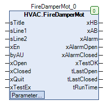

FireDamperMot (FB)¶
FUNCTION_BLOCK FireDamperMot
Short Description¶
Control of a motorised fire damper with two position feedback signalsAdditional functions: Function test of the fire damperTypical application: Control of a fire damper in an HVAC system
Portrayal¶

Functional Description¶
General¶
Enable opening / closing of fire damper before manual override xAB¶
Release of opening / closing of fire damper after manual override xHB¶
xAB eManModeB xHB Notes
FALSE eMANBIN.Auto FALSE Manual override module in automatic mode
TRUE eMANBIN.Auto TRUE Manual override module in automatic mode
X eMANBIN.ManOn TRUE Manual override module in manual mode On
X eMANBIN.ManOff FALSE Manual override module in manual mode Off
xAlarm collective alarm¶
Enabling / disabling the alarm message for the opening feedback xAlarmOpen¶
Enabling / disabling the alarm message for the feedback of the closing xAlarmClosed¶
Duration of the last complete opening tLastOpen¶
Duration of the last complete closing tLastClosed¶
Duration of the current opening / closing in tRunTime¶
Testing the functions of the fire damper ( test operation )¶
Prerequisites¶
Prerequisite for using the function block FireDamperMot
Visualization¶
Codesys¶
- InOut:
Scope Name Type Initial Comment Input sTitle STRING Name of the fire damper
sLine1 STRING Text for line 1
sLine2 STRING Text for line 2
xEn BOOL Requirement opening / closing of the fire damper ( FALSE = closing, TRUE = opening )
byAU BYTE 0 Feedback of automatic mode ( 0 = automatic, >0 = manual mode )
xOpen BOOL Feedback - Fire damper open ( FALSE = not open, TRUE = furnace )
xClosed BOOL Feedback - Fire damper closed ( FALSE = not closed, TRUE = closed )
xQuit BOOL FALSE Acknowledgement of alarm states ( FALSE > TRUE )
xTestEx BOOL FALSE Requirement of the fire damper test ( FALSE > TRUE )
Output xHB BOOL Release opening / closing of fire damper after manual override (FALSE = closing, TRUE = opening)
xAB BOOL Release opening / closing of fire damper before manual override (FALSE = closing, TRUE = opening)
xAlarm BOOL Enabling / disabling the alarm message for the feedback signals ( FALSE = Disable, TRUE = Enable )
xAlarmOpen BOOL Enabling / disabling of the Alarm message for the feedback of the opening ( FALSE = disabling, TRUE = enabling )
xAlarmClosed BOOL Enabling / disabling of the alarm message for feedback of the closing ( FALSE = Disable, TRUE = Enable )
xTestOK BOOL Result display for the fire damper test ( FALSE = test not successful, TRUE = test successful )
tLastOpen TIME Duration of the last complete opening in s
tLastClosed TIME Duration of the last complete closure in s
tRunTime TIME Duration of current opening / closing in s
Input tOpen TIME TIME#3m0s0ms Maximum time for opening the fire damper in s
tClose TIME TIME#25s0ms Maximum time duration for closing the fire damper in s
eManModeB eMANBIN eMANBIN.Auto Operating mode of manual override for the xHB digital output
xRunTest BOOL FALSE Requirement of the fire damper test ( FALSE > TRUE )
_StopWatch StopWatch Access to the internal stop timer